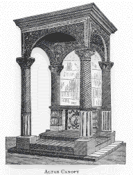

|
| A B C D E F G H I J K L M N O P Q R S T U V W X Y Z |
 The "Caeremoniale Episcoporum" (I, xii, 13), treating of the ornaments of the altar, says that a canopy (baldachinum) should be suspended over the altar. It should be square in form, sufficiently large to cover the altar and the predella on which the celebrant stands, and if it can easily be done, the colour of the material, silk velvet or other cloth, with which it is covered, should vary with the colour of the ornaments of the altar. It is either suspended from the ceiling by a movable chain, so that it may be lowered or raised when necessary, or it may be attached to the wall, or to the reredos at the back of the altar. It may also be a stationary structure, and this is usually the case in large churches, and then it is made of marble, stone, metal, or wood beautifully carved and overlaid with gold or silver, in the form of a cupola erected on four pillars. In liturgy it is called the ciborium. The canopy or ciborium is, according to the decision of the Cong. Sac. Rit., to be erected over the altar of the Blessed Sacrament (23 May, 1846), and over the other altars of the church (27 April, 1697), but as contrary custom has so far prevailed that even in Rome it is usually erected only over the high altar, and the altar of the Blessed Sacrament. The purpose of this canopy is to protect the altar from dust or other matter falling upon it from the ceiling, which, being usually very high, cannot be conveniently or easily cleaned. On solemn festivals, or at special solemnities, a temporary canopy is sometimes placed over an altar in or outside the church. The framework on which such a canopy is erected is called the "altar-herse", a word probably derived from hearse, a frame covered with cloth, and formerly set up over a corpse in funeral solemnities.
APA citation. (1907). Altar Canopy. In The Catholic Encyclopedia. New York: Robert Appleton Company. Retrieved April 26, 2010 from New Advent: http://www.newadvent.org/cathen/01351a.htm
MLA citation. "Altar Canopy." The Catholic Encyclopedia. Vol. 1. New York: Robert Appleton Company, 1907. 26 Apr. 2010 <http://www.newadvent.org/cathen/01351a.htm>.
Transcription. This article was transcribed for New Advent by Michael C. Tinkler — image scanned by Wm Stuart French, Jr.
Ecclesiastical approbation. Nihil Obstat. March 1, 1907. Remy Lafort, S.T.D., Censor. Imprimatur. +John Cardinal Farley, Archbishop of New York.
Contact information. The editor of New Advent is Kevin Knight. My email address is webmaster at newadvent.org. (To help fight spam, this address might change occasionally.) Regrettably, I can't reply to every letter, but I greatly appreciate your feedback — especially notifications about typographical errors and inappropriate ads.
{kind=link}